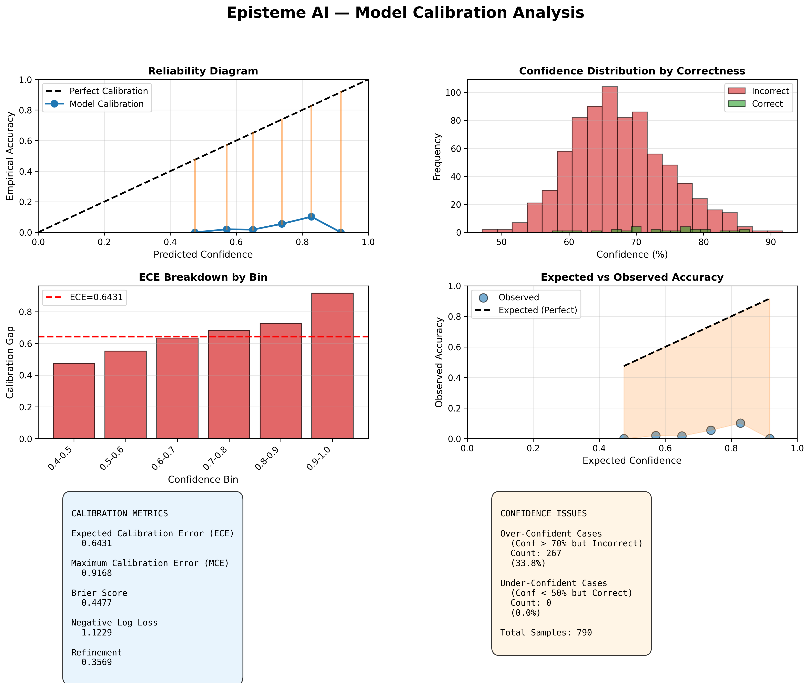

Expected Calibration Error
0.6431
Lower is better (ideal: 0)
Maximum Calibration Error
0.9168
Max gap between confidence and accuracy
Brier Score
0.4477
Lower is better (ideal: 0)
Refinement
0.3569
1 - ECE (higher is better)
📊 Key Calibration Metrics
📈 ECE (Expected Calibration Error): 0.6431
The ECE measures the average gap between predicted confidence and empirical accuracy across confidence bins.
❌ POOR: ECE is high, indicating significant calibration problems.
📈 MCE (Maximum Calibration Error): 0.9168
MCE is the maximum gap in any single confidence bin. This represents the worst-case calibration error.
❌ POOR: MCE is very high, some confidence levels are highly miscalibrated.
📈 Brier Score: 0.4477
The Brier Score is the mean squared difference between predicted probabilities and actual outcomes.
❌ POOR: Brier Score indicates weak probabilistic calibration.
| Negative Log Loss |
1.1229 |
| Calibration Slope |
1.4460 (Ideal: 1.0) |
| Calibration Intercept |
-4.3282 (Ideal: 0.0) |
| Total Samples |
790 |
⚠️ Confidence Issues
🔴 Over-Confident Cases
Count: 267 (33.8% of samples)
These are predictions where the model was >70% confident but still incorrect.
These cases suggest the model may be too confident in its predictions.
🟡 Under-Confident Cases
Count: 0 (0.0% of samples)
These are predictions where the model was <50% confident but still correct.
These cases suggest the model may be unnecessarily hesitant in some scenarios.
🔍 Audit Status Distribution
| Passed Calibration |
✓ 285 (36.1%) |
| Audit Flagged (Low Confidence) |
⚠ 505 (63.9%) |
📋 Calibration Bin Details
| Bin |
Confidence Range |
Mean Confidence |
Empirical Accuracy |
Calibration Gap |
Sample Count |
| Bin 1 |
0.40 - 0.50 |
0.4748 |
0.0000 |
0.4748 |
2 |
| Bin 2 |
0.50 - 0.60 |
0.5714 |
0.0196 |
0.5518 |
102 |
| Bin 3 |
0.60 - 0.70 |
0.6505 |
0.0175 |
0.6330 |
401 |
| Bin 4 |
0.70 - 0.80 |
0.7381 |
0.0553 |
0.6828 |
235 |
| Bin 5 |
0.80 - 0.90 |
0.8280 |
0.1020 |
0.7260 |
49 |
| Bin 6 |
0.90 - 1.00 |
0.9168 |
0.0000 |
0.9168 |
1 |
📊 Visualizations
Comprehensive calibration analysis plots:

✅ Recommendations
- ECE Improvement: Focus on the bins with the largest calibration gaps. Implement temperature scaling or Platt scaling for better calibration.
- Over-confidence: If over-confident cases are high, consider increasing the regularization or using confidence penalty in the loss function.
- Under-confidence: If under-confident cases are prevalent, the model may benefit from confidence boosting or removal of excessive regularization.
- Monitoring: Track calibration metrics over time. Re-calibrate the model periodically as data distributions shift.
- Decision Thresholds: Use calibration curves to set optimal decision thresholds for business-critical applications.